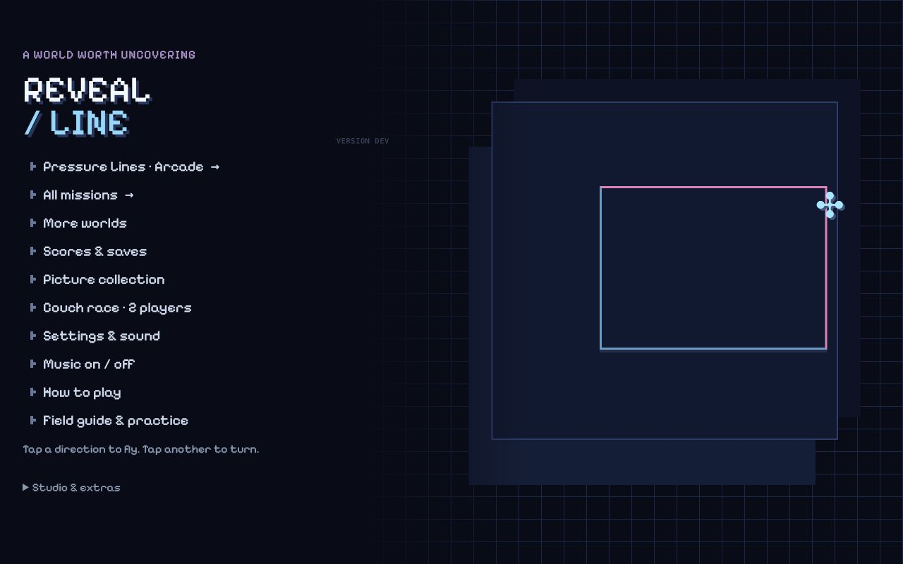
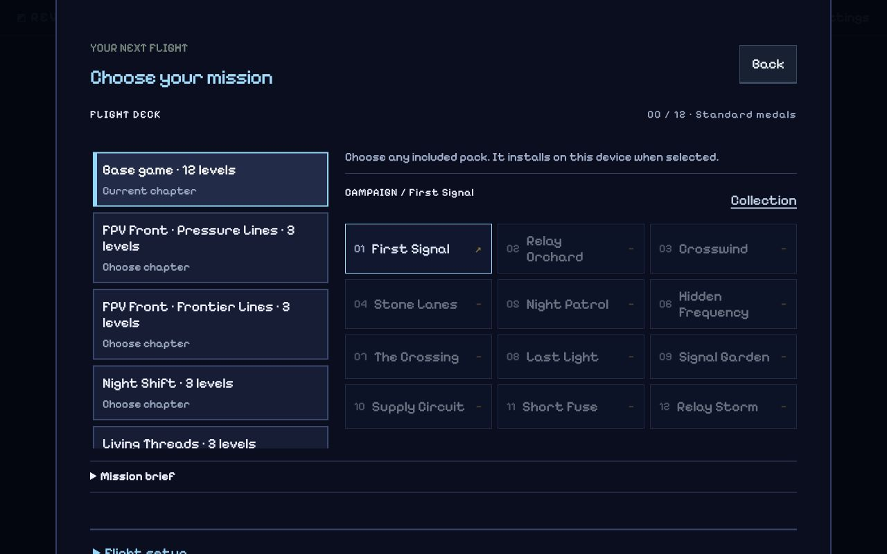
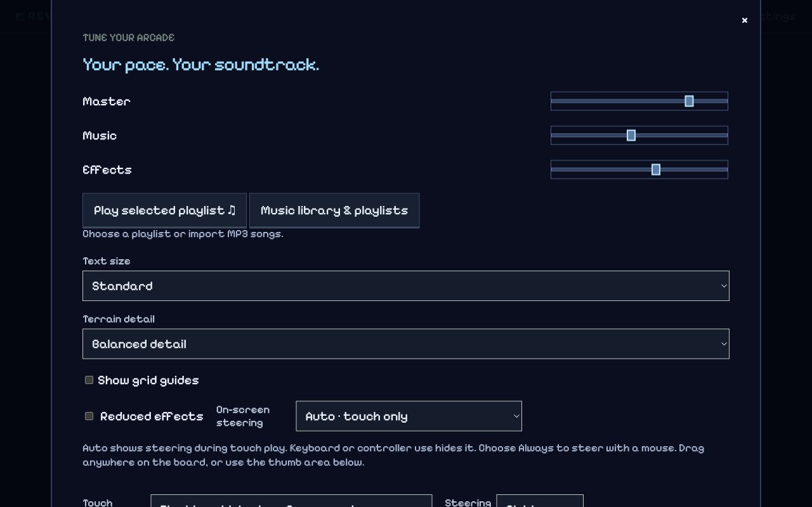
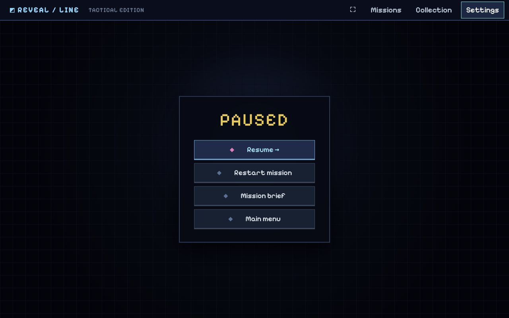

The route comes first
Player and unfinished cable lead. Hazards and boundaries follow. Terrain, artwork and atmosphere stay behind them.
Checking local font availability…
PHASE 0 · DESIGN REVIEW
Pixel FPV field kit. One visual language, from the first launch to the last revealed picture. Built around the route, the craft and the world worth uncovering.
Explore the screen studies ↓01 / THE DIRECTION
Keep Xposed Reloaded’s focused menus, image collection and bright live route. Give everything else a coherent, original field-console identity.
Player and unfinished cable lead. Hazards and boundaries follow. Terrain, artwork and atmosphere stay behind them.
Large pixel headings, clean interface text, steady numbers. English and Ukrainian get the same attention.
Ink, cyan and amber. Stepped frames, purposeful texture and recognizable quad silhouettes. No competing decorative styles.
Reference Third-party screenshots and prior observations. Inspiration, not game assets.
Proposed Original layout studies and future acceptance criteria. Not live gameplay.
Atlas feature Working review controls, source links, specimens and inventory on this page.
02 / THE WHOLE JOURNEY
These HTML/CSS studies demonstrate hierarchy and states. Buttons only navigate this atlas; they do not launch missions or change saves.
Loading original screen studies…
03 / A READABLE SIGNAL
Three roles, each doing one job. These specimens load the local Field Kit fonts, independently from the current game’s type system.
HANDJET / LARGE DISPLAY
Find your next route.
Square construction · large titles and reward moments · no small instructions.
EXO 2 / INTERFACE
Choose a mission. Close the line. Reveal the world.
Clear labels, briefings, settings and longer reading. Sentence case preserves word shapes.
IBM PLEX MONO / NUMBERS
64 / 8002:38 · 11,450
Stable coverage, time, score, bindings and asset dimensions. No decorative grid over the glyphs.
АБВГҐДЕЄЖЗИІЇЙКЛМНОПРСТУФХЦЧШЩЬЮЯ · абвгґдеєжзиіїйклмнопрстуфхцчшщьюя · ’ ʼ ь ґ є і ї
Accent colors identify roles together with shapes and labels. Do not use cyan, amber or coral as an interchangeable decoration pool. Final components still require contrast and minimum-size checks.
04 / NOTHING LEFT OUTSIDE
Inventory of existing destinations and the required redesign states. “Planned” refers to the new Field Kit treatment, not whether the underlying feature already exists.
| Surface | States to cover | Shared treatment / placement | New design |
|---|
05 / A KIT THAT CAN GROW
A replacement should know where it belongs. The asset framework connects previews, requirements, source records and generation prompts to the same semantic slot.
Four propellers, compact frame, front camera. Amber center marks the player; the body does not redefine the collision footprint.
Stable slot, theme, dimensions, pixel grid, palette roles, pivot, animation/rig contract and footprint constraints.
Preview on light, dark and real field backgrounds. Preserve originals when cropping; validate every member before applying a collection.
Include style, exact output requirements, required states, forbidden visual collisions and the current reference version. Copy one slot or a coordinated collection brief.
FPV is the complete first production theme. Ukrainian, Retro and Coupa are future presentation collections; gameplay rules stay separate.
Proposed example; production prompts must derive their exact geometry and filenames from the selected registry slot.
Create an original top-down FPV scout sprite for the RevealLine Pixel FPV Field Kit. Use a compact charcoal quad frame, four separate propellers, a front camera and a small antenna. A warm amber center identifies the player. Use the selected slot’s exact dimensions, pivot, frame order and palette contract; do not invent these values. Keep a crisp pixel grid, restrained highlights and a clear silhouette at native size. Use a transparent background. Do not paint HUD text, glows, a collision outline, a trail, a logo or scenery into the body. Keep every required pose in the same scale and lighting direction. Return the sprite or coordinated sheet with all required states, an unchanged slot contract and a short description of the variation. Preserve gameplay bounds. Review on the arena before publishing.
COMMITTED BASELINE / FE9961E · V0.43.0
Actual screenshots from the reviewed source, isolated from redesign edits. The redesign studies above are proposals. Desktop browser resizing provides layout evidence, not physical-device certification.

Keep one primary action and move tools and supporting routes into clear destinations.

Preserve selection and lock behavior while replacing the dense lists with a paced gallery.

Group controls, audio, accessibility and game data instead of one long mixed form.

The new frame must retain opaque gameplay concealment and explicit Resume.
Title phone capture · Mission phone capture · Briefing phone capture · Flight capture
06 / THE REFERENCE, IN CONTEXT
All 64 supplied Xposed images were inspected. The examples below remain in the source research folder; the atlas does not copy them into game assets or a release.
Local screenshot previews are available when reviewing the source repository on localhost. Official source links remain available below.
Few decisions, a strong focal image, unmistakable selection. Adapt the composition; create an original FPV scene.
Artwork, earned medals and a remembered selection make replay tangible. Six cards are a viewport, not a pack limit.
Bright tip, clear unfinished cut, calm completed contour. Xposed mixes smooth imagery with pixel UI; our selected direction unifies the art.
Explain medals and preserve immediate Retry / Next. Keep picture appreciation distinct from actual achieved coverage.


{kind=link}
{kind=link}
{kind=link}
{kind=link}
{kind=link}
{kind=link}
{kind=link}
{kind=link}